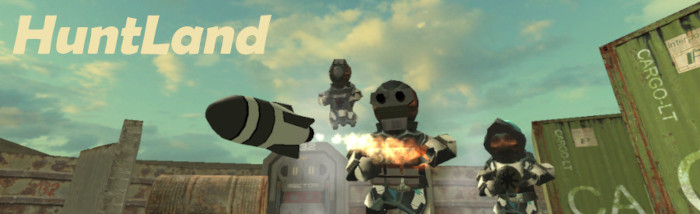
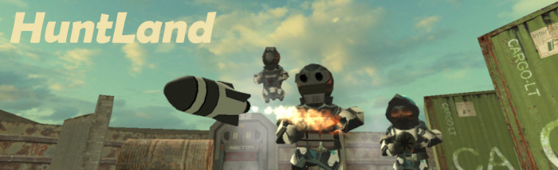

(Automation of Arts - 1)
The history of engineering has been a history of automating tasks which used to be manually carried out. First it was repetitive physical labor, next it was repetitive computational work (e.g. calculating numbers, organizing a table, etc), and now it is the whole sphere of intellectual activities that is on the verge of being fully automated.
And the scary part of this is that even artists are not safe from the new industrial revolution. Art used to be one of the most exclusively human activities, not assumed to be replaceable by any machine in any way. Yet, we are now witnessing some of the most groundbreaking advancements in the realm of software engineering such as "procedural content generation", "generative AI", "computational semantics", and so on. Some people even claim that artists will become obsolete because of this.
But artists do not deserve to be treated like this! One of the moral obligations of an engineer must be to always endeavor to empower artists, instead of trying to devalue them by automating their job.
It is not my intention to push a lame, cliché argument such as: "Artificial intelligence will never replace real humans because it doesn't have 'real emotion', blah blah....". No. As an engineer, I firmly believe that AI will eventually manage to fully replace artists at least in the area of expressive techniques. In the end, AI will manage to imitate even the deepest core of human intellect and act the same way as real professional artists do.
Even if machines achieve this level of expertise, however, they will never quite touch the essence of what makes an art a "real art". It is not just the material aspect alone which makes a piece of material an "art" in a sense in which it is subconsciously defined by people.